Station · 29 Sep: lenses that match the live price, a lens on every page, a steady crosshair readout, faster clouds
Branch station/lens-crosshair-20260929, built on today's live Station (bacb424). Not pushed, not deployed. All four items from your evening notes are built, measured in a hidden browser, and screenshotted at 1680 wide and at phone width (390).
In one minute
The lens now matches the live price. I reproduced your SPY case. After hours, both SPY lenses ended at 766.07 while the chart's badge said 764.20. In a replay of 14:47 today, the 4H lens said 763.30 and the 30M lens 763.97 while the badge said 764.80. The cause: the lens drew only finished candles, while the big chart has drawn its live, still-forming point since yesterday. The lens now draws the same live point. In all four cases the lens's last price now equals the badge's.
Every page has a lens.152 of 160 charts across the 27 pages now show one, up from 96. The 8 without one have no chart of ours to put a lens on: the TO-DO page's six TradingView-only series, and the put/call chart (PCC) on two pages, which the chart service wasn't serving during the final check. Short charts (30M to 4H, and the 3H menu pages) show the zoomed-out view: about three months of daily candles. Weekly charts show the last 20 days. Daily and 3-day charts keep what they had. No lens showed STALE anywhere.
The crosshair keeps the current-price label, and its readout now sits in one fixed spot: the bottom-right corner of every chart. It is the same spot on all 8 charts of a page, measured. The % is now the biggest text: 18 px on every layout I measured, including 8-up and phone (it was 10.5 px), with the price under it. The lines and the time tag are unchanged, and a lens now fades back when the time tag passes under it.
Clouds: the slow ones were the pages with the RSI fan. There, each ticker's daily history was read three times at once, and the fan's other reads competed with it. Now it's read once, and the clouds load first. On those pages the typical wait between a chart's price and its clouds dropped from 1.2 s to 0.36 s (SPY + QQQ · DAY: 1.7 s → 0.3 s), with 44% fewer daily reads and no cloud drawn twice. One page is still slow: MACRO · WEEK, about 3.6 s. There the chart service itself takes 2–5.5 s to send ~1,000 days of VIX, the dollar, the 10-year and Bitcoin, before and after this change.
Tests: 868 run, 850 pass. The 18 failures are exactly the 18 that already fail on live, so nothing new fails. 19 new checks were added (one file), and 7 older checks were updated where they pinned the old behaviour this brief changes (no lens on weekly/short charts; the crosshair label riding the price strip). Each of the four commits was checked on its own against the same baseline.
Two problems I found and fixed along the way: the daily lens briefly showed STALE, because the daily candles arrive newest first and it took the oldest 60. And on the phone, a lens could hide the crosshair's date tag.
1 · The lens matches the live price
"THE CONTEXT LENSES AND CHARTS SOMETIMES DONT EVEN MATCH THE LIVE PRICE… I SAW A CONTEXT BAR FOR SPY THAT DIDNT MATCH THE LIVE PRICE OF THE CHART, THE BIGGER CHART."
What was wrong. Since yesterday (P3), the big chart draws its forming bar from the live price, the way TradingView does. The lens didn't: it drew only candles that had finished. So between one candle closing and the next, and all evening after the last candle, the lens's last price was an older price than the badge's.
What it does now. The lens reads the same live price the badge prints, and uses it in one of two ways:
If the live price belongs to a new candle within the lens's hours, the lens draws that candle as forming. It opens at the last finished close, grows its high and low with each tick, and is drawn with a dashed outline, the same way the big chart draws its forming point dashed.
If the price falls outside the lens's hours (after 20:00, overnight), the newest candle is extended: its close becomes the live price. Its outline is also dashed, so you can tell it's live.
Whether a lens is STALE is still judged on finished candles only, so a live tick can't make an old lens look fresh.
SPY
Lens
Badge (live)
Lens before
Gap before
Lens after
Gap after
After hours (now, 20:30 ET)
4H (3-day chart)
764.20
766.07
+0.245%
764.20
0.000%
After hours
30M (daily chart)
764.20
766.07
+0.245%
764.20
0.000%
Session replay, 14:47 ET
4H
764.80
763.30
−0.196%
764.80
0.000%
Session replay, 14:47 ET
30M
764.80
763.97
−0.109%
764.80
0.000%
The new daily lens was checked the same way (SPY on a 1H chart and a 1W chart): it shows 764.20 after hours and 764.80 in the replay, the badge's price both times.
How the replay works: the page's clock was set to 14:47 ET today. Every candle the chart service returned was cut to the ones finished by then. The live price pushed in was the real 1-minute close at 14:46, sent exactly the way the Station deck sends it. "Before" is the unchanged live code (bacb424); "after" is this branch. The sweep of all 27 pages (section 2) also found 0 of 152 lenses off the live price.
2 · A lens on every page
"THERE IS STILL A TON OF CHARTS WITHOUT A CONTEXT LENS… CONTEXT LENSES FOR SHORT TERM CHARTS ARE STILL USEFUL TO SHOW THE ZOOMED OUT VIEW."
The rule: the lens shows the view the chart itself can't.
The chart is
The lens shows
30M, 1H, 3H, 4H (any 15M–12H)
Zoomed out: daily candles for about three months (60 trading days)
1D
Unchanged: the last 3 sessions of 30-minute candles
3D
Unchanged: 12 sessions of 4-hour candles
1W
The last 20 daily candles
Measured on all 27 pages, one hidden browser per page, reading every visible chart:
Page
Charts with a lens, before
After
Lens drawn
INDEXES · WEEK
0 / 8
8 / 8
20 days
MACRO · WEEK
0 / 6
6 / 6
20 days
MACRO · DAY
0 / 6
6 / 6
30M, 3 sessions
MACRO · 4H
0 / 4
3 / 4
daily, 3 months (PCC: no chart, see note)
INTRADAY · 4H
0 / 6
6 / 6
daily, 3 months
INTRADAY · 1H
0 / 4
4 / 4
daily, 3 months
INTRADAY · 30M
0 / 2
2 / 2
daily, 3 months
SCINTILLAS
0 / 6
6 / 6
daily, 3 months (see note)
COMPANY LEADERSHIP
0 / 6
6 / 6
daily, 3 months
FOCUS 2
0 / 2
2 / 2
daily, 3 months
MACRO CROSS-ASSET
0 / 6
6 / 6
daily, 3 months (see note)
INTERNALS
0 / 2
1 / 2
daily, 3 months (PCC: no chart, see note)
TO-DO
0 / 6
0 / 6
none: ADD, TICK, TRIN and cumulative tick are TradingView pictures, not charts of ours
The 14 pages that already had one
96 / 96
96 / 96
unchanged
All 27 pages
96 / 160
152 / 160
0 STALE, 0 off the live price
Note on PCC. During the final check the chart service answered the put/call series with "no series · PUTCALL_STALE_1_SESSION", so no PCC chart was drawn at all: the live code (before) and this branch behaved the same. In an earlier sweep the same evening, PCC drew and had its lens. It is a server-side state, not something this branch changed.
Note on SCINTILLAS and MACRO CROSS-ASSET. These pages are listed as 1D and 3D, but the Station's timeframe applies to every page at once (it starts at 3H after a reload, and menu pages don't override it). So in the test their charts really were 3H charts, and they correctly got the zoomed-out lens. When the wall is on 1D or 3D, the same pages get the 30M or 4H lens. The same holds if you switch the timeframe on any page: the lens follows what the chart is showing.
No false STALE. A daily lens counts as STALE only when two trading days are missing: one late daily bar is normal, and today's live candle is drawn anyway. That means Monday mornings and the day after a holiday are never STALE. Futures and crypto count as STALE only after four calendar days. The dollar (DXUSD) now keeps its published hours, the same fix you asked for on the charts on 28 Sep. On the CME clock it would have shown STALE every evening. Where the lens goes on the chart is decided by the existing placement rule, unchanged.
What it costs. A daily lens doesn't add a data read: it draws from the same daily read the cloud ribbon already makes (section 4).
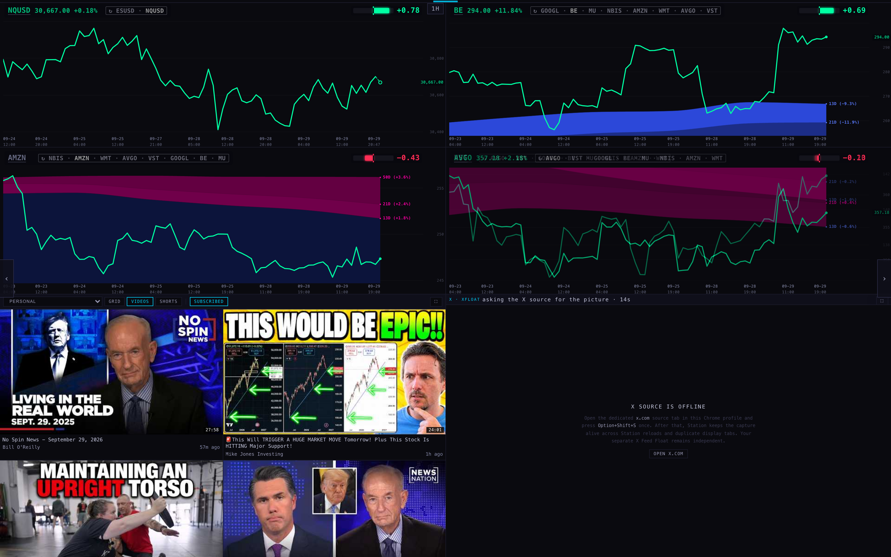
BEFORE · INTRADAY · 1H at 1680: no lens on any of the four charts
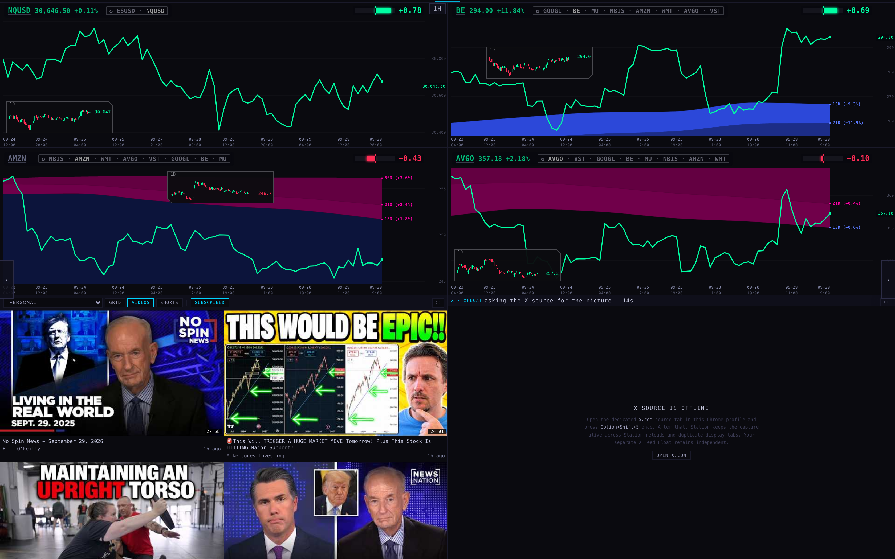
AFTER · a 1D lens on all four (NQUSD bottom-left, BE top, AMZN top-centre, AVGO bottom-left); each lens's last price matches its badge (BE 294.0, AVGO 357.2)
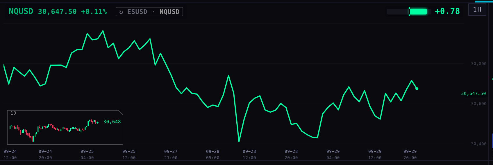
AFTER · close-up, NQUSD 1H: about three months of daily candles bottom-left, last 30,647 against the badge's 30,646.50 (the lens rounds prices above 1,000)
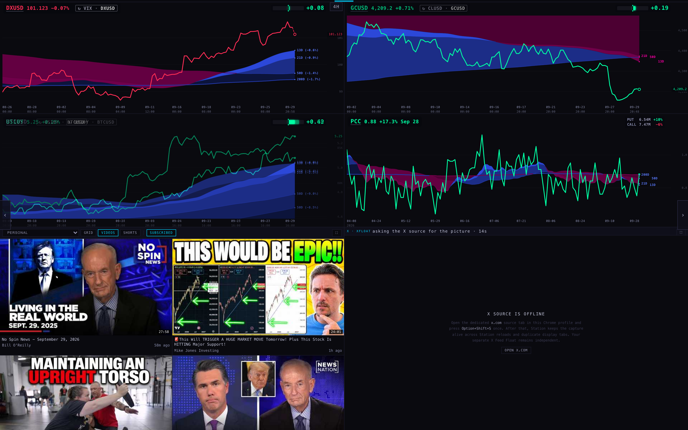
BEFORE · MACRO · 4H: no lens
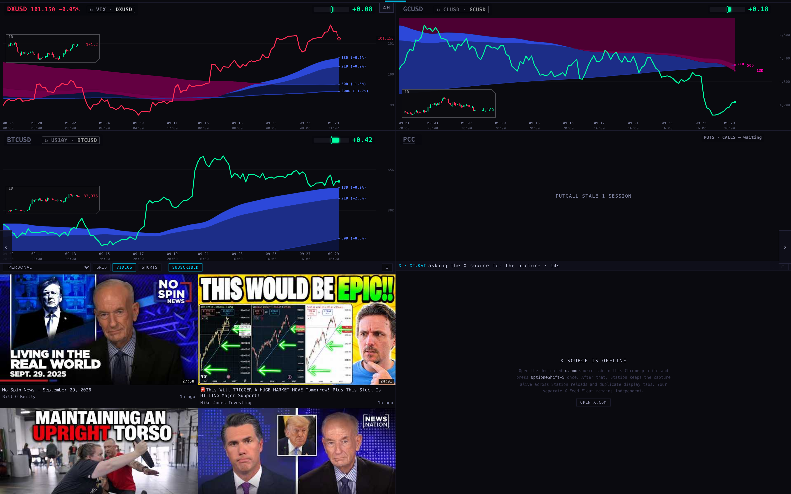
AFTER · 1D lenses on DXUSD, GCUSD and BTCUSD, all fresh. PCC shows "PUTCALL STALE 1 SESSION": no chart, so no lens
3 · The crosshair
"i really like the axis markings and horizontal and vertical lines with the scroll on the mouse… it shows the percentage price difference and price but it removes the current price label for some reason. i dont like that. and i feel like it should appear in same location vertical and horizontal on all charts on that layout. plus the percentage price change needs to be bigger."
The current-price label stays. It used to be hidden while the crosshair was up; now it's always drawn. It moves only in one case: when the readout is up and the two would touch, the label steps just above the readout.
One fixed spot. The readout no longer follows the crosshair up and down. It sits in the bottom-right corner of each chart, against the chart's right edge and just above the row where the time tag runs. Measured on TARGETS: all 8 charts put it at exactly the same place (x 330, y 205 of a 419 × 277 chart). That includes the top row, which shares the time axis of the chart below it.
The % is the biggest text: 18 px on the 8-chart walls, 2-chart pages and phone (only a chart shorter than 257 px gets less, down to 14 px), up from 10.5 px. The price is under it at 11 px. The % still follows yesterday's rule: (price under the cursor ÷ current price − 1), green above the current price and red below.
Unchanged: the horizontal and vertical lines and the time tag. A lens never sits in the readout's corner, and if the time tag passes under a lens, the lens fades back while the crosshair is up.
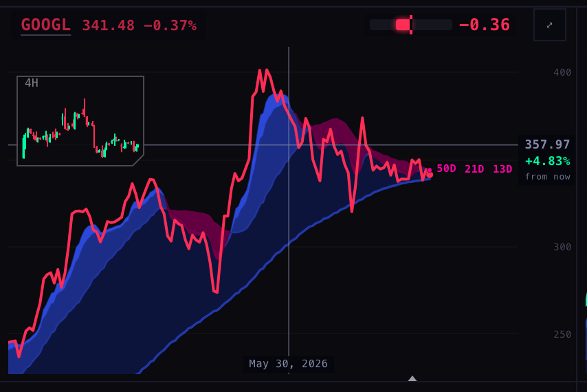
BEFORE · TARGETS 3D, GOOGL: the readout rides the crosshair in the price strip (357.97 / +4.83% / from now); the current price 341.48 is gone
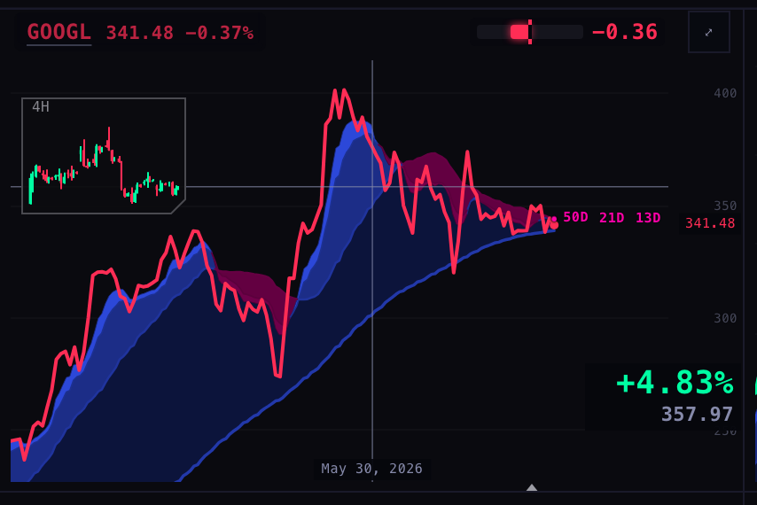
AFTER · the current price 341.48 stays in the price strip; bottom-right: +4.83% (18 px, green) over 357.97; lines, time tag and 4H lens unchanged
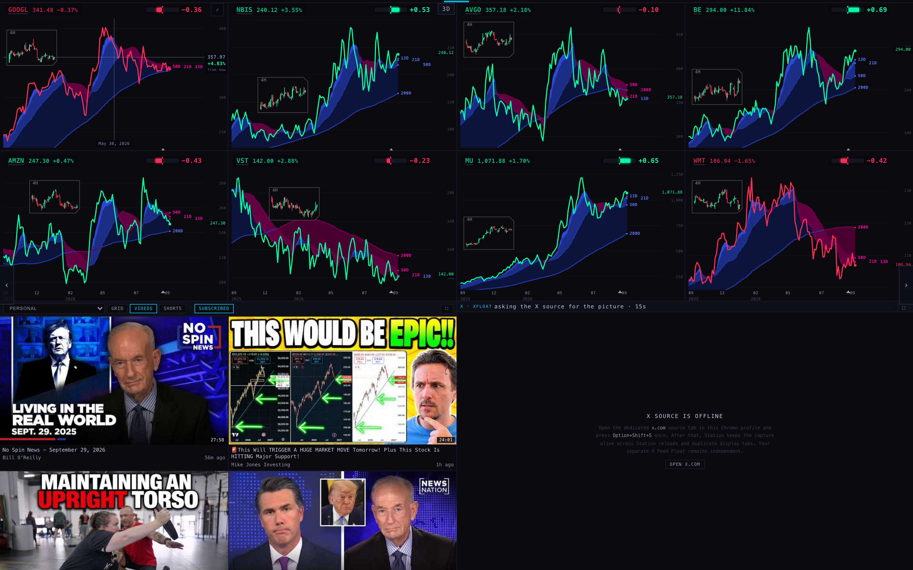
BEFORE · TARGETS 3D at 1680, crosshair on GOOGL
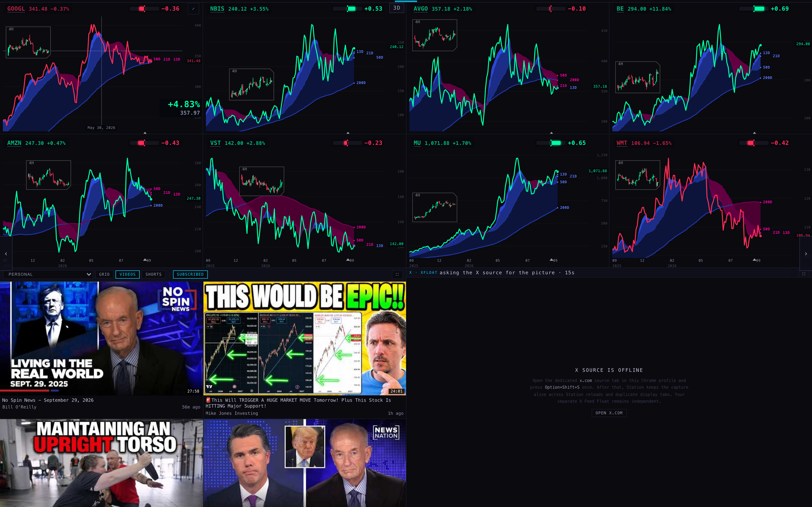
AFTER · the same; all 8 charts carry their 4H lens, and all 8 reserve the same readout corner
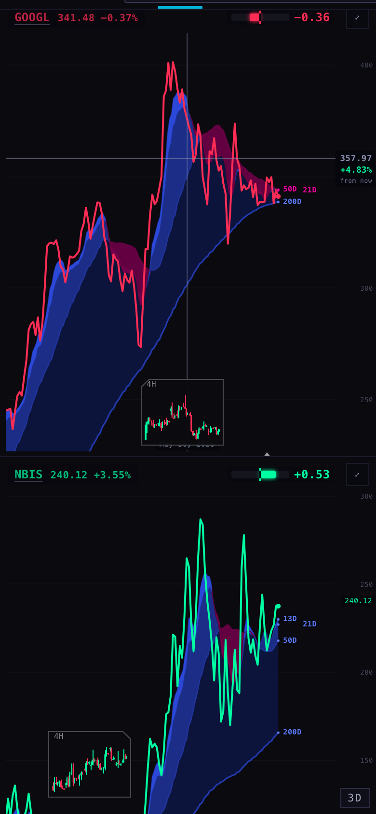
BEFORE · phone 390
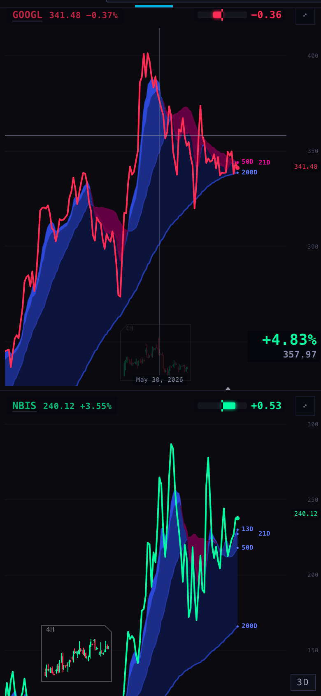
AFTER · phone 390: +4.83% / 357.97 bottom-right, 341.48 kept; the lens fades so "May 30, 2026" reads
4 · Slow and odd-looking clouds
"LOADING IS SLOW AND WEIRD ON SOME CLOUDS."
What I measured. I opened every page in a fresh hidden browser, 3 times, for the live code (before) and this branch (after), side by side so both saw the same network. For every chart I recorded when its price appeared, when its clouds appeared, how often the clouds were drawn again, and every daily-history read.
What was slow, and why. The late clouds were on the pages with the RSI fan. There, each ticker's daily history was read three times at once: once for the clouds (450 days), and twice for the fan's daily line (400 + 602). On top of that ran the fan's hour-level reads, which L2b measured at up to 4.4 s cold. They all competed, so the clouds' read was the one that waited. The new daily lens would have added a fourth read. In one case a cloud was also drawn twice: the lens started its own daily read before the chart knew how much the fan needed, and the clouds then read again.
What changed. I took L2b's idea (the fan's daily line reuses the clouds' daily read), not its Geiger hold:
One daily read per ticker, long enough for the clouds, the fan's daily line and the lens, all three sharing it. The candles stay in memory for the lens; what's saved in the browser stays as small as before.
The fan's other reads wait for the clouds' read (3 s at most), so the clouds come first and the fan a moment after.
A daily lens waits for the chart's price and then uses that same read, so the clouds are never read or drawn twice.
Page (median of 3 cold runs)
Clouds after price, before
After
Daily reads, before
After
SPY + QQQ · DAY
1.72 s
0.32 s
8
4
OTHER INDEXES · RSI
1.20 s
0.85 s
24
12
TARGETS · RSI
1.23 s
0.83 s
32
16
SPY + QQQ (3D)
1.18 s
0.87 s
6
2
INTRADAY · 30M
0.87 s
0.36 s
8
4
FOCUS 2
0.26 s
0.36 s
4
2
INTERNALS
0.28 s
0.26 s
2
1
INTRADAY · 1H (4 new lenses)
0.26 s
0.34 s
8
8
MACRO · WEEK (6 new lenses)
3.77 s
3.61 s
6
6
These 9 pages
median 1.18 s
0.36 s
98
55
No cloud was drawn twice in any run after the change. Pages above 1 s went from five to one (MACRO · WEEK).
The whole Station, first pass (all 27 pages × 3 runs, taken before the last two changes above): daily reads 246 → 205 while 58 new lenses were added, and the median page's clouds-after-price 0.53 s → 0.38 s. On the rotating pages the last cloud lands at about 14 s. That isn't slowness: the rotating slots bring in their later names on schedule, and each name's clouds follow its price by under 0.4 s.
Not fixed: MACRO · WEEK. Its clouds need about 1,000 days of history for VIX, the dollar, the 10-year, gold, oil and Bitcoin. The chart service takes 2–5.5 s to send each of those, before and after this change. That's a server-side cost; the page can't make it faster. See decision 2.
Decisions for you
The readout's corner. I put it bottom-right, because the Geiger chip holds the top-right and the badge the top-left. With the % at 18 px, it covers a small corner of the price line while the crosshair is up. My recommendation: keep bottom-right. If you'd rather it sat top-right under the Geiger chip, it's a one-line change.
MACRO · WEEK's clouds (about 3.6 s). The wait is the chart service sending ~1,000 days of macro history per name. My recommendation: a backend lane keeps a warm copy of those six daily series on the chart service. It's a Fly job for the coordinator, not a page change.
Lenses on your own workspaces (LIVE, CUSTOM, SCRATCH). They have none, as before. My recommendation: leave them off until you've lived with the new lenses on the 27 pages for a day.
Where each number comes from
Prices, candles and the live quote: the chart service scintilla-massive-chart-api.fly.dev, read only. It accepts only scintillahub.ai as an origin, so the hidden browser's requests were passed through a small local relay that adds that origin. I say this because it's the one way the test setup differs from your browser.
Lens prices: the lens's own record of the last price it drew. The "before" figures were recomputed from the lens's own read of the unchanged code.
Cloud timings: measured in each chart window every 50 ms, from the moment the page was opened. Every data read was logged by the relay.
The scripts are in harness/ next to this page, and the raw results are in the evidence-*.json files.
What could be wrong
A forming lens candle opens at the last finished close, not at its true first trade, which we don't receive. The big chart's forming point has the same limit.
The session replay cut real candles at 14:47. It wasn't a live market session, since the markets were closed when this was built. I'd look at it once live tomorrow.
Cloud timings depend on the chart service and the network at the moment of measuring. That's why "before" and "after" ran at the same time on the same machine, 3 times each.
On a very narrow chart the readout covers the bottom-right corner of the price line for as long as the crosshair is up. That's the cost of a fixed spot with a bigger %.
What I did not do
I didn't take L2b's Geiger hold, as the brief said. I took only its idea of reusing the daily read.
No lens on LIVE, CUSTOM, COHORT or SCRATCH: those are your own workspaces. I can add one if you want it.
No lens for the TO-DO page's TradingView pictures.
I didn't push, deploy, or touch the Hub, the database or the Indicator Lab.